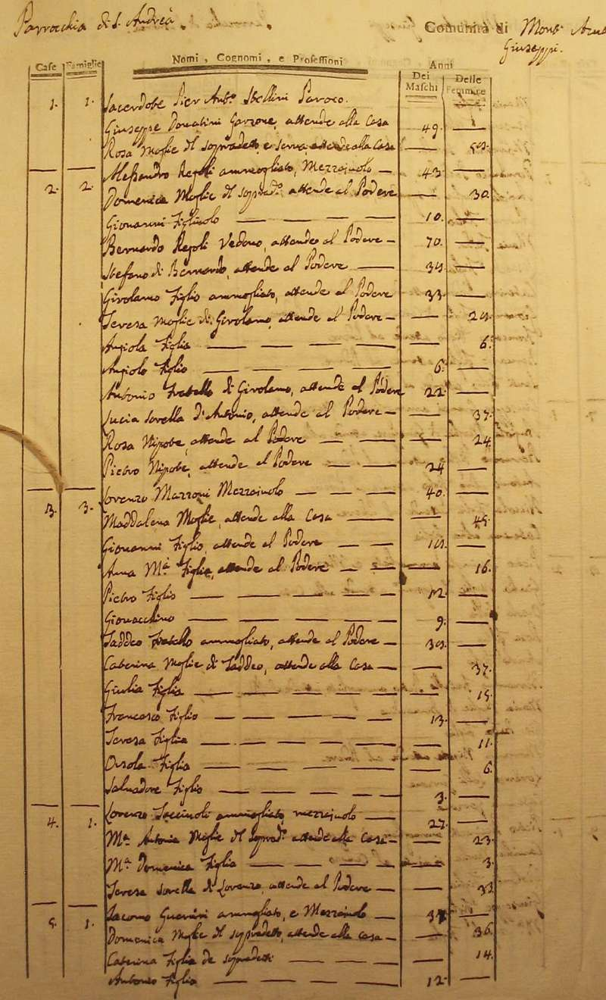
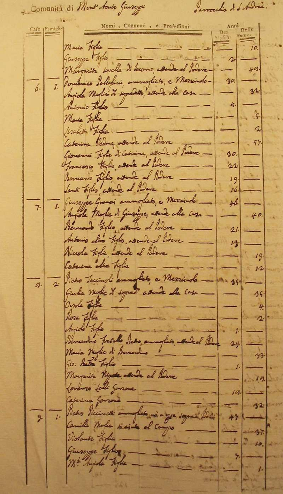
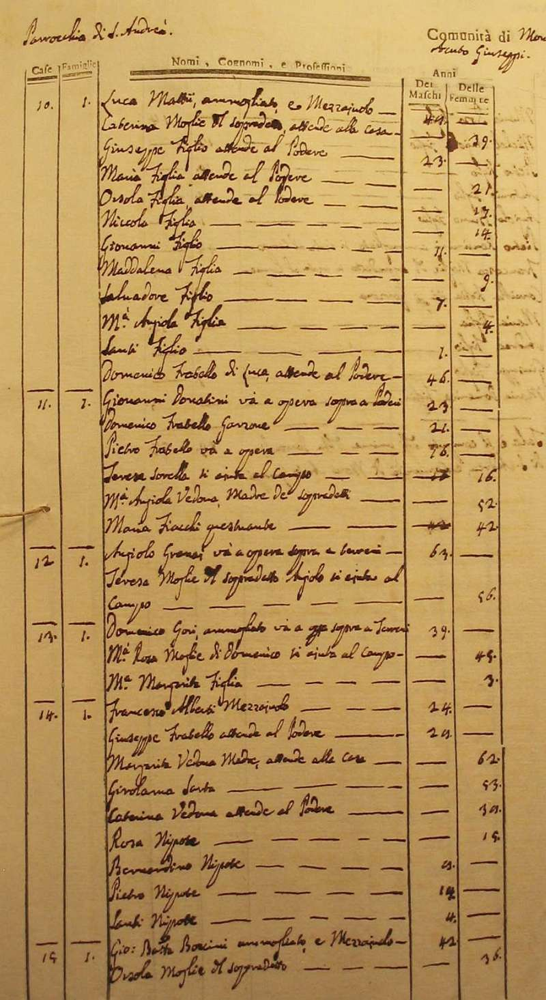
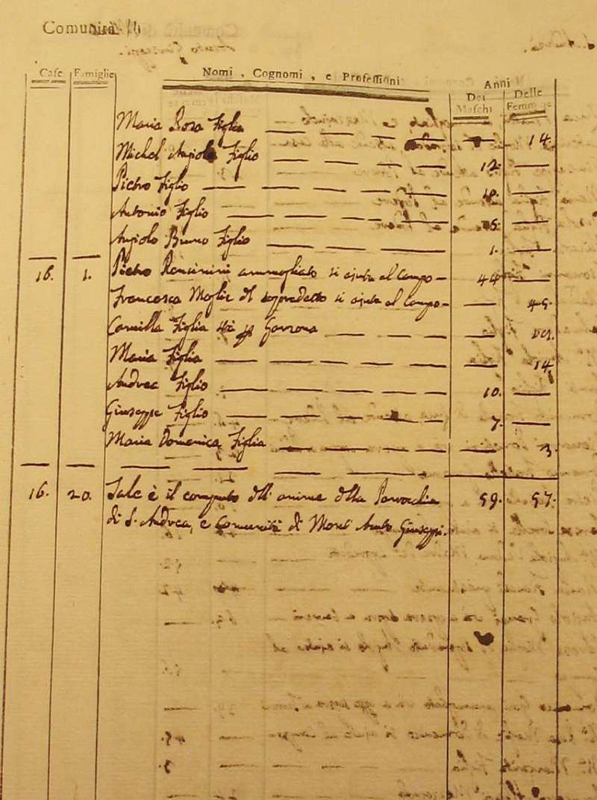
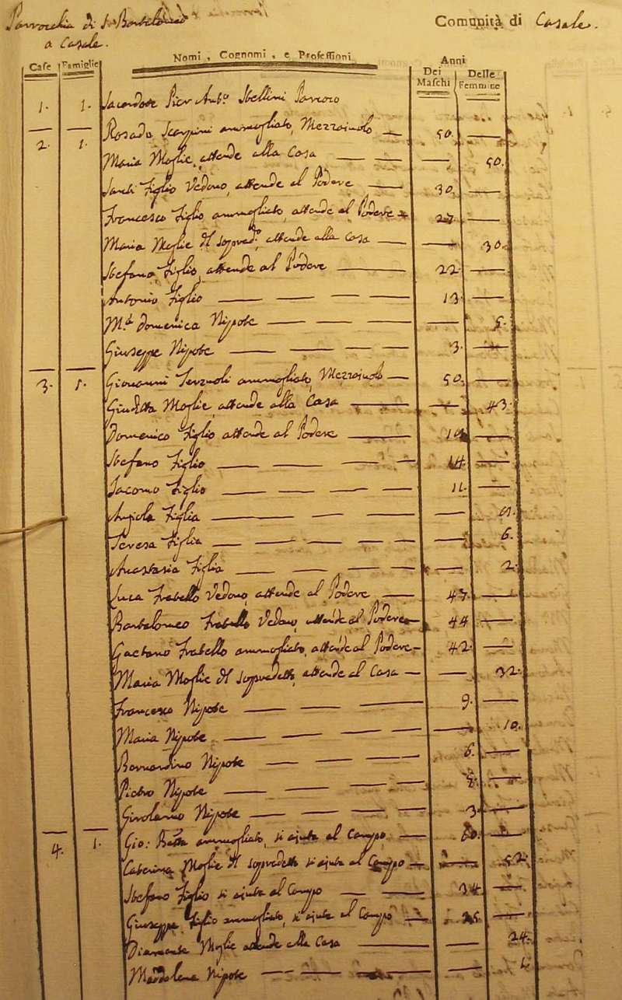
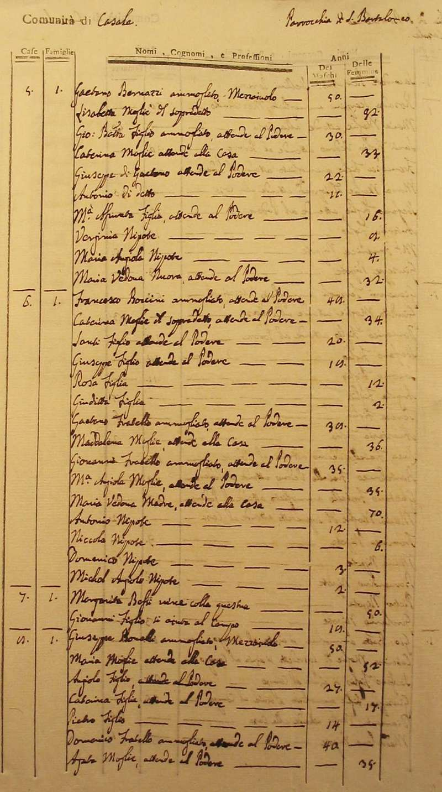
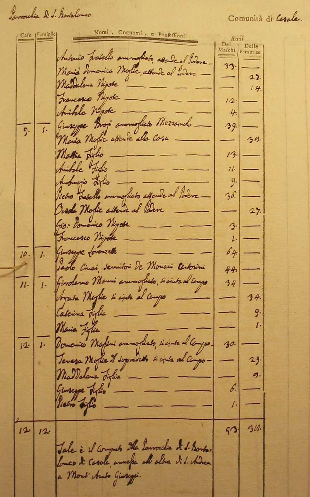

|
Ritorna all'indice delle parrocchie
Il numero abbinato ad ogni famiglia indica la relativa posizione nello Stato delle Anime
1 - Sacerdote Pier Antonio Stellini - Paroco
1 - Donatini Giuseppe - garzone della canonica - 2
2 - Regoli Alessandro - mezzaiuolo
3 - Mazzoni Lorenzo - mezzaiuolo
4 - Tacciuoli Lorenzo - mezzaiuolo
5 - Guerrini Jacomo - mezzaiuolo
6 - Pallassini Domenico - mezzaiuolo
7 - Granai Giuseppe - mezzaiuolo
8 - Tacciuoli Pietro - mezzaiuolo
9 - Piccinetti Pietro - va a opera sopra a poderi - 5
10 - Mattii Luca - mezzaiuolo - 12
11 - Donatini Giovanni - va a opera sopra a poderi - 6
12 - Granai Angiolo - va a opera sopra a terreni - 2
13 - Gori Domenico - va a opera sopra a terreni - 3
14 - Alberti Francesco - mezzaiuolo
15 - Boncini Giovanni Battista - mezzaiuolo
16 - Roncinini Pietro - si aiuta al campo
Parrocchia S. Bartolomeo a Casale annessa
2 - Scarpini Rosado - mezzaiuolo
3 - Terzuoli Giovanni - mezzaiuolo - 17
4 - n.d. Giovanni Battista - si aiuta al campo
5 - Bernazzi Gaetano - mezzaiuolo
6 - Boccini (?) Francesco - mezzaiuolo
7 - Bossi Margarita - vive con la questua
8 - Bonelli Giuseppe - mezzaiuolo
9 - Brogi Giuseppe - mezzaiuolo
10 - Lorenzetti Giuseppe - servitori dei monaci certosini
11 - Civai Paolo - servitori dei monaci certosini
12 - Manni Girolamo - si aiuta al campo
13 - Masini Domenico - si aiuta al campo







Torna ad inizio pagina
Ritorna all'indice delle parrocchie
| |

|